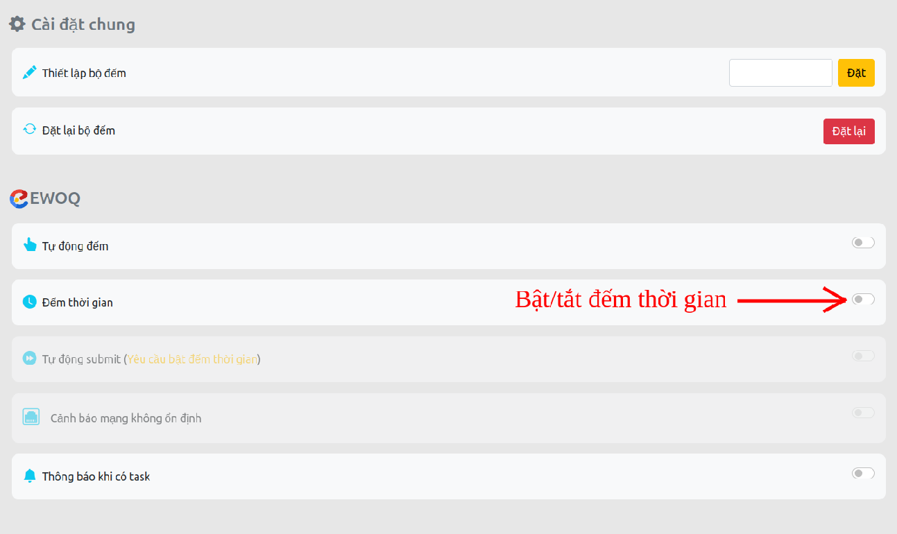

Có gì ở phiên bản này?
-
(Đặc biệt) Tự động đếm task khi submit (Chỉ dùng trên trang EWOQ)
-
Đếm thủ công
-
Lịch sử click
-
Lần click gần nhất
-
Reset bộ đếm
-
........
Hướng dẫn cài đặt
Cài đặt thủ công
-
Bước 1: Tải file và giải nén
Tải file "auto-count-extension.zip" và giải nén được thư mục có các file như hình:

-
Bước 2: Mở trang quản lý extensions
- Mở menu của chrome
- Mở trang quản lý extensions
+ (Tiếng anh): More tools -> Extensions
+ (Tiếng việt): Công cụ khác -> Tiện ích mở rộng

- Trang quản lý extensions:

-
Bước 3: Bật chế độ Developer mode (Chế độ dành cho nhà phát triển)

-
Bước 4: Cài đặt extension
- Kéo thả file "auto-count-extension.crx" vào cửa sổ trang quan Quản lý extensions vừa mở

- Nhấn đồng ý cài đặt etension

- Cài extension thành công

-
Bước 4: Xong, sử dụng thôi:))
- Bên dưới là hướng dẫn sử dụng Auto mode
- Hoặc có thể nhấp chuột phải vào icon của extension rồi chọ User guide từ menu để mở trang hướng dẫn.
Hướng dẫn sử dụng chung
-
Chế độ tự động đếm (Chỉ dùng trên trang EWOQ)
- Cách bật/tắt:
Cách 1: Bật/tắt trực tiếp ở menu chính
B1: Click chuột phải vào icon extension

B2: Click "Switch to Auto mode... / Switch to Manual mode" để bật/tắt chế độ tự động đếm

Cách 2: Bật/tắt trong trang tùy trọn
B1: Click chuột phải vào icon extension
B2: Click "Options" để mở trang tùy chọn

B2: Click để bật/tắt chế độ tự động